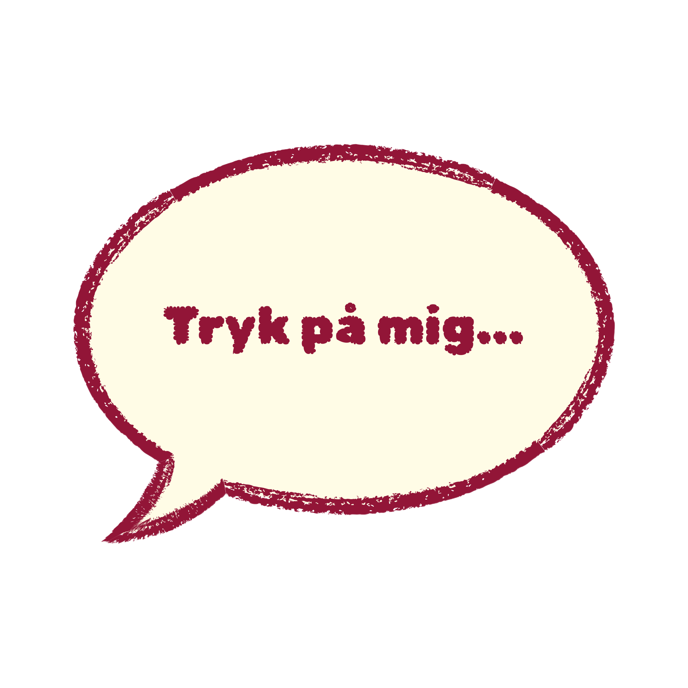
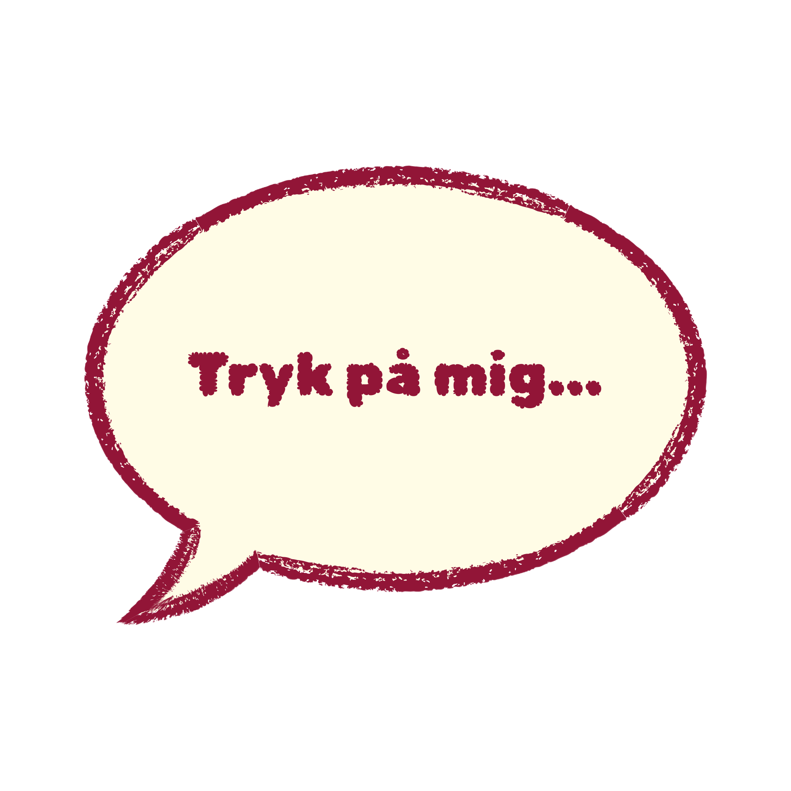

5000 - 1000 f.v.t.
De første forsøg på at undgå graviditet


De første forsøg på at undgå graviditet

Da prævention blev set som synd

Fra fåretarme til gummi – prævention bliver noget man kan vælge


Fra tabu til teknologi


Fra frihed til beskyttelse – nye måder at styre sin krop på

Prævention for alle – også mænd